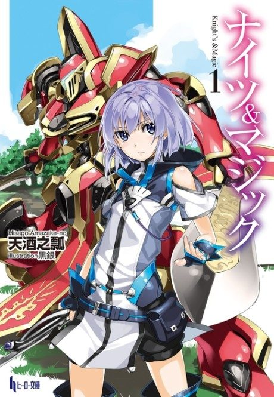

Knight's & Magic
ナイツ&マジック
A mecha-loving programmer is reborn in a fantasy world with giant robots, and sets out to build his own.
After the anime, read the light novel from Volume 3.
6.8AniList score
—Animeter, no votes yet
13episodes
Rate it or report where you stopped
Anime finished. Where does the story go next?
Start at Volume3
The anime stops partway through volume 3 with the war still unfolding, so start at the beginning of volume 3 to avoid missing content.
13ongoing
Season 1Start reading here
More like Knight's & Magic
 Manga Vol. 37.5
Manga Vol. 37.5
 Manga Vol. 58.1
Manga Vol. 58.1
 Manga Vol. 157.6
Manga Vol. 157.6
 Film7.2
Film7.2
 Unclear7.6
Unclear7.6
 Unclear7.4
Unclear7.4
 Original7.0
Original7.0
 Manga Vol. 77.0
Manga Vol. 77.0
 Unclear7.0
Unclear7.0
 Unclear6.9
Unclear6.9
 Manga Vol. 56.9
Manga Vol. 56.9
 Original8.5
Original8.5